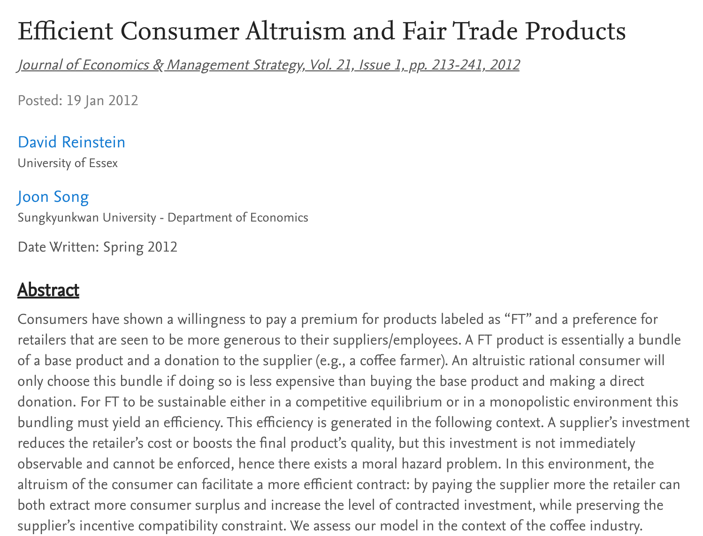
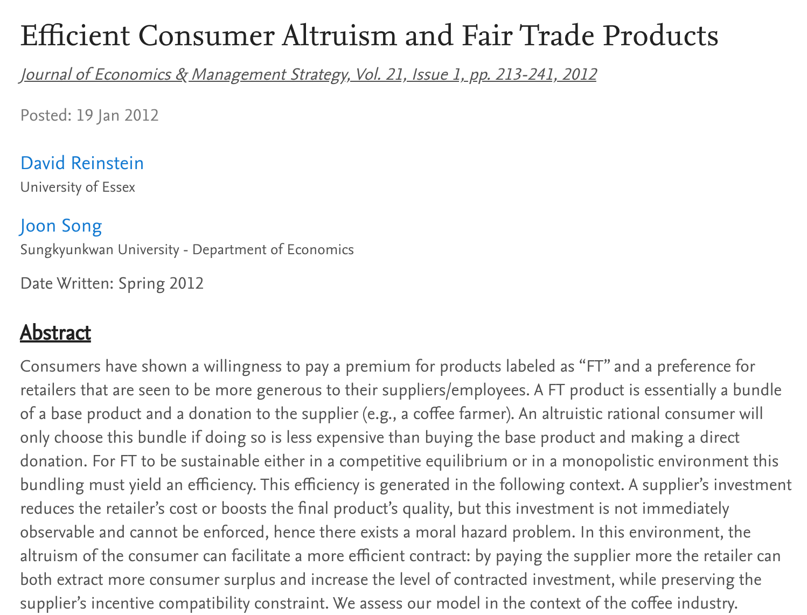
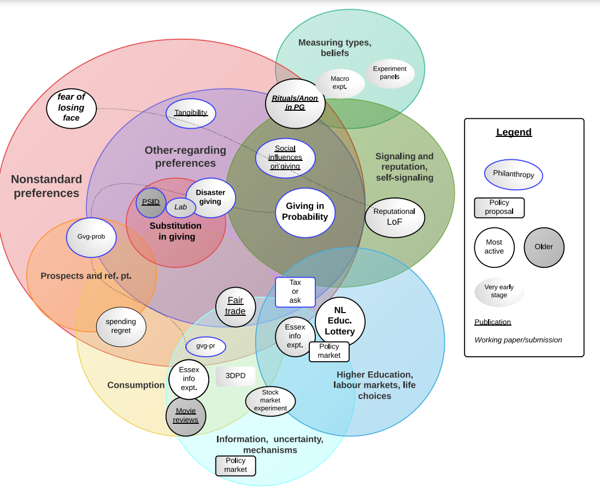
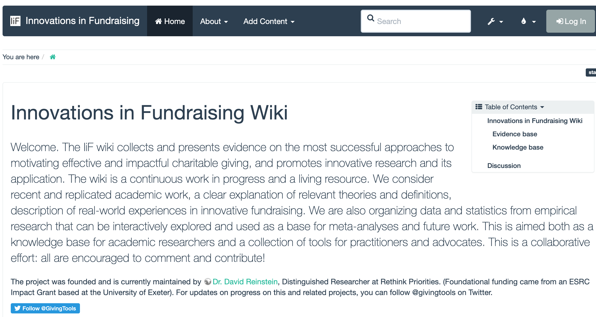
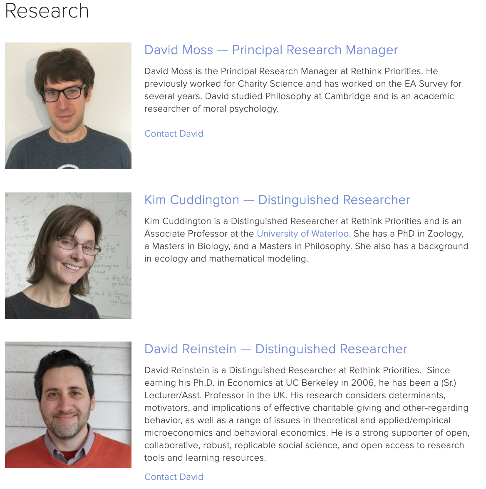

Effective Altruism: Research Priorities and Opportunities
David Reinstein
2021-06-09
## [1] TRUEPreamble
Message

The founders of Effective Altruism took ideas from Philosophy, Economics, and other parts of academia to build a rigorous approach to ‘doing the most good in the world’, and to exploring and measuring this.
- Miraculously, “EA happened”
Big opportunity for academic researchers to have impact, inspiration, funding
Partnering within academia, EA research audience
Grants
Helping students
Leave academia for greener (?) pastures at an EA-aligned org
Things I’m not going to cover:
- “Things I’m not going to cover” (no time)
What/who is EA? What research/funding is there?
What is EA?
Doing the ‘most good’ given limited resources (some relationship to utilitarianism)…
but how do we define ‘the most good’?
 ){width=“550”}
){width=“550”}
What do EA’s prioritize most?
- Global Poverty
- Artificial Intelligence Risk
- Climate Change
- Cause prioritization
- Animal welfare
Results of impromptu survey at LIS conference: What they think EA’s prioritize
lis_ea_priority_guess <- factor(c(
"Cause prioritization",
"Global Poverty",
"Cause prioritization",
"Climate Change",
"Global Poverty",
"Climate Change",
"Global Poverty",
"Global Poverty",
"Cause prioritization",
"Cause prioritization",
"Climate Change",
"Cause prioritization",
"Climate Change",
"Artificial Intelligence Risk",
"Climate Change",
"Global Poverty",
"Cause prioritization",
"Cause prioritization",
"Climate Change",
"Global Poverty",
"Cause prioritization",
"Cause prioritization",
"Cause prioritization",
"Global Poverty",
"Global Poverty",
"Global Poverty",
"Cause prioritization",
"Climate Change",
"Climate Change",
"Global Poverty",
"Global Poverty",
"Climate Change",
"Global Poverty",
"Global Poverty",
"Cause prioritization",
"Climate Change",
"Global Poverty",
"Global Poverty"
)
)
lis_survey <- tibble(
lis_ea_priority_guess = lis_ea_priority_guess
)
lis_survey %>% tabg(lis_ea_priority_guess) %>%
.kable(caption = "What LIS resspondents *think* EAs prioritize most:" ) %>%
.kable_styling()| lis_ea_priority_guess | n | percent |
|---|---|---|
| Global Poverty | 15 | 0.39 |
| Cause prioritization | 12 | 0.32 |
| Climate Change | 10 | 0.26 |
| Artificial Intelligence Risk | 1 | 0.03 |
2020 EA survey: all responses
… ‘Highly engaged’ (self-rated)

How much effective altruism/global priorities research funding is there?
.kable_styling <- hijack(kableExtra::kable_styling, full_width=FALSE)
.kable <- hijack(knitr::kable, format.args = list(big.mark = ",", scientific = FALSE))
(
op_research_grants_tab <-
open_phil_grants %>%
filter(possible_research==TRUE) %>%
group_by(year) %>%
dplyr::summarise(total = format(sum(amount, na.rm = TRUE), big.mark=",", scientific=FALSE), grants = n()) %>%
arrange(-year) %>%
mutate(year=as.character(year)) %>%
.kable(caption = "Open Phil (likely) research funding by year") %>%
.kable_styling()
)| year | total | grants |
|---|---|---|
| 2021 | 18,877,180 | 11 |
| 2020 | 77,681,029 | 76 |
| 2019 | 122,463,958 | 63 |
| 2018 | 38,589,084 | 52 |
| 2017 | 57,666,403 | 45 |
| 2016 | 22,386,936 | 27 |
| 2015 | 2,591,000 | 9 |
| 2014 | 1,437,720 | 3 |
| 2013 | 445,000 | 2 |
By year and focus area:
(
op_res_grants_tab_yr_area <-
open_phil_grants %>%
filter(possible_research==TRUE) %>%
dplyr::group_by(year, focus_area) %>% # drop_na(!!yvar, !!treatvar) %>%
summarise(total = sum(amount_usd_k, na.rm = TRUE)) %>%
spread(year, total, fill=0) %>%
arrange(-`2020`) %>%
.kable(caption = "OpenPhil (likely research) grants by year and area, in $1000 USD") %>%
.kable_styling()
)## `summarise()` has grouped output by 'year'. You can override using the `.groups` argument.| focus_area | 2013 | 2014 | 2015 | 2016 | 2017 | 2018 | 2019 | 2020 | 2021 |
|---|---|---|---|---|---|---|---|---|---|
| Scient. Res. | 0 | 0 | 0 | 7,085 | 27,500 | 19,720 | 43,770 | 43,751 | 672 |
| Biosec. | 0 | 0 | 300 | 1,943 | 7,747 | 8,704 | 1,625 | 12,792 | 1,000 |
| AI risk | 0 | 0 | 1,186 | 6,333 | 10,798 | 3,128 | 61,288 | 10,891 | 15,185 |
| Glob. Catastr. | 0 | 0 | 0 | 3,070 | 3,758 | 0 | 1,703 | 4,586 | 1,500 |
| Farm Animal | 0 | 0 | 0 | 820 | 2,022 | 4,580 | 3,296 | 3,261 | 519 |
| Other | 0 | 0 | 10 | 500 | 1,550 | 47 | 1,050 | 806 | 0 |
| Glob. Health/Dev. | 0 | 0 | 0 | 0 | 2,864 | 210 | 3,176 | 678 | 0 |
| Macro-econ | 0 | 0 | 0 | 700 | 0 | 700 | 1,150 | 600 | 0 |
| Immig. Pol. | 0 | 1,185 | 390 | 0 | 0 | 400 | 0 | 200 | 0 |
| Crime/Justice | 445 | 0 | 180 | 1,636 | 1,427 | 1,101 | 5,066 | 115 | 0 |
| Land Ref. | 0 | 0 | 275 | 300 | 0 | 0 | 340 | 0 | 0 |
| US pol. | 0 | 253 | 250 | 0 | 0 | 0 | 0 | 0 | 0 |
(
op_res_grants_line <-
open_phil_grants %>%
group_by(year, focus_area) %>%
mutate(total = sum(amount_usd_k, na.rm = TRUE)) %>%
ggplot() +
aes(x = year, y = amount_usd_k, colour = focus_area) +
geom_jitter(width = 0.5, height = 0.2, size=0.8) +
scale_colour_discrete(labels = function(x) str_wrap(x, width = 15)) +
geom_line(aes(x=year, y=total)) +
ylab("Grant amounts in $1k")
)(
open_phil_grants %>%
filter(possible_research==TRUE) %>%
filter(year==2020) %>%
group_by(Focus.Area) %>%
summarise(total = format(sum(amount, na.rm = TRUE), big.mark=",", scientific=FALSE), grants = n()) %>%
dplyr::arrange(-grants) %>%
.kable(caption = "Open Phil (likely) research funding, 2020") %>%
.kable_styling()
)| Focus.Area | total | grants |
|---|---|---|
| Scientific Research | 43,750,718 | 33 |
| Farm Animal Welfare | 3,261,351 | 13 |
| Potential Risks from Advanced Artificial Intelligence | 10,891,345 | 8 |
| Biosecurity and Pandemic Preparedness | 12,792,330 | 7 |
| Global Health & Development | 678,358 | 5 |
| Criminal Justice Reform | 115,000 | 3 |
| Global Catastrophic Risks | 4,586,224 | 2 |
| Macroeconomic Stabilization Policy | 600,000 | 2 |
| Other areas | 805,703 | 2 |
| Immigration Policy | 200,000 | 1 |
By organization
(
op_res_grants_tab_orgs_area <-
open_phil_grants %>%
filter(possible_research==TRUE) %>%
dplyr::group_by(Organization.Name) %>% # drop_na(!!yvar, !!treatvar) %>%
summarise(total = sum(amount_usd_k, na.rm = TRUE), `number of grants` = n()) %>%
arrange(-total) %>%
filter(total>5000) %>%
.kable(caption = "OpenPhil (likely research) grants by corganization and area, in $1000 USD") %>%
.kable_styling()
)| Organization.Name | total | number of grants |
|---|---|---|
| Georgetown University | 55,250 | 2 |
| UC Berkeley | 29,552 | 18 |
| Nuclear Threat Initiative | 20,439 | 6 |
| Sherlock Biosciences | 17,500 | 1 |
| Machine Intelligence Research Institute | 14,756 | 5 |
| University of Washington (Institute for Protein Design) | 11,368 | 1 |
| Stanford University | 8,294 | 1 |
| Open Phil AI Fellowship | 6,760 | 4 |
| Arizona State University | 6,421 | 1 |
| University of Southern California | 6,238 | 3 |
| Rutgers University | 5,982 | 2 |
| MIT Synthetic Neurobiology Group | 5,970 | 2 |
| Stanford University | 5,752 | 10 |
| Telethon Kids Institute | 5,300 | 1 |
| Foundation for Food and Agriculture Research | 5,292 | 6 |
| Harvard University | 5,068 | 3 |
Other organizations funding or doing EA/GP research, or likely interested
EA funding model
Maybe 500 million USD per year in EA/adjacent donations (+ about 250 million from OpenPhil)
GiveWell moving ~$80M per year
Founders Pledge
Longview
Effective Giving
EA Funds
“Gates Foundation seems to do ~$100M-500M/yr of grants in global economic development that seem to have cost-effectiveness on par with GiveWell work”
It’s not all research funding, but some of it is, and it is all interested in prioritization/effectiveness research.
There is a large amount of Lots from tech and crypto billionaires/millionaires. Some ‘bigger fish’ on the line too like Elon Musk –>
Other research orgs
Research orgs (partial list):
- Future of Humanity Institute (about 70 including affiliates, fellows, affiliates)
- Global Priorities Institute (about 20 researchers/affiliates)
- Rethink Priorities (11 researchers, hiring more)
- GiveWell (about 10 researchers/advisors)
- Animal Charity Evaluators (5-ish)
- Machine Intelligence Research Institute (about 20)
How do most ‘effective altruists’ engage; what is most strongly advocated?
Quiz to audience?
- Political action
- Effective charitable donations/Earning to give
- Pursuing a high-impact career
- Avoiding environmental damage through personal actions
From EA Surveys, EA orgs

EAs are moving towards pursuing impact through their careers.
80k hours statements
EA Careers (survey)

My story

From my web CV …

Berkeley:
- Proposing ‘new ideas’ like the Poor Card
Limited audience…
 

‘Does one donation come at the expense of another’?
Should an ‘efficient altruist’ purchase ‘fair trade’ products, bundling consumer choices with additional revenue to poor farmers/workers?
Considering ideas with a pre-EA policy audience.

Things I care about: lining up with concepts in the discipline? But I really cared about ideas and impact.
 Essex, UK:
Experiments/trials and observational work on charitable and gift-giving: social influences, types of income/uncertainty
Applied microeconomic theory

Moved to Exeter, UK
to pursue ‘Impact’ (ESRC grant, REF focus)
Building teaching/research/outreach resources, such as
innovationsinfundraising.org and ‘barriers to effective giving’
“Researching and writing for Economics students”

Positives: Support, research freedom, deep theoretical work
Limitations: Politics/management, journal games, less-engaged students
Limitations
Rethinking my priorities (eyeroll)

In 2021 I left my secure academic post:
To pursue greater impact …
To build tools and programs…
(Should you do it too? Back to this at the end)
What I’m doing now
- Longview-funded: ‘Barriers to effective giving’
Categorization and links to Economics and Psychology ‘theory’
Meta-analysis and synthesis
Field experiments and trials in large-scale contexts
Survey methods: representativeness, survey design
Identifying key questions for ‘tracking a movement and its impact’, e.g.,
- “Which people are likely to contribute the most; ‘selecting’ where to promote’” (ML and inference)
- “What will the impact of the EA community be in 10-20 years?” (APC modeling)
- Do anticipated donations tend to exceed actual donations and when/why
Analysis: Visualisation, descriptive, predictive, and
…
- Outreach and message testing
Receptiveness to parts of EA message
Support for policies (e.g., animal welfare)
Future work: moral weights, measurement of satisfaction, ‘near-term’ (global health) evaluation, ‘shallow reviews’
Support and guidance to other RP projects (e.g., modeling the meat industry; designing behaioural trials)
Connection with academia; publishing, recruiting, advising students
Effective altruism and global priorities
What are the ‘important cause areas’?
Near term, Long-term future, Animal welfare, Prioritization research and ethics
Near-term
- Global health, environmental
- Extreme poverty
- Mental health
- Manmade/political suffering
- Global warming

Long-term

- Existential risk
- ‘S-risk’ (suffering)
- Population growth/expansion
Global catastrophic risks: Artificial Intelligence ‘alignment’, Bio risks and epidemics, Nuclear/political
Animal welfare

- Factory farming and fishing
- Wild animal welfare
E.g.,
How to create better systems for creating and disseminating knowledge
Whether and how to ‘discount’ future individuals (income or happiness)?
How to make choices under moral uncertainty
How to value ‘more happy people’ versus ‘happier people’ (population ethics)
EA perspectives: Why do we need research, what should research do?
Defining a moral, value and choice framework, working out thorny moral decision-optimization issues
Empirical measurement of value and ‘what works to achieve it’
Empirical evidence on persuasion: ‘how to get people to act pro-socially and effectively’
Defining a moral framework, considering ‘what has value’, and ‘how to learn and choose’?
… how to value things and be consistent, how to use uncertainty and information in making altruistic choices
E.g.,
moral weights
population ethics
moral uncertainty .
From GPI agenda:
Under what conditions would a social planner or philanthropist prioritise policies that primarily increase social welfare in the far future rather than in the near term? For instance, under what condition would such agents prioritise saving for future generations (Ramsey 1928) or reducing the risk of human extinction (Baranzini and Bourguignon 1995)?
Should one have the same levels of epistemic modesty about unusual moral views as one should about unusual empirical views?
To what extent should we be risk averse in our approach to doing good, and what are the implica/tions of reasonable risk aversion for global prioritisation? (Quiggin 1982…)
Social welfare criteria that are used to compare states that differ in population size typically specify a critical welfare level at which lives that are added to the population have zero contributive value to social welfare (Blackorby et al. 1995…). What kinds of lives have zero contributive value in this sense (Cockburn et al. 2014…)?
Empirical measurement informs ‘production function for good’
‘What has value and moral worth?’ (e.g., sentience research)
How to measure value? (e.g., pain/pleasure DALY)
How to achieve value?
Direct interventions and policies, direct/indirect, short and LT impacts
Very long term impacts, inference with deep uncertainties
Should we loosen migration restrictions to increase global welfare? What is a politically feasible level of migration? (from Rhys-Bernard syllabus)
Estimating, in terms of SWB, the impact of potentially highly-effective interventions, including: psychotherapy for common mental disorders; cataract surgery for blindness; deworming tablets to improve lifelong earnings (from Happier lives institute research priorities)
Empirical (behavioural) … How to get people and institutions to care about others (altruism) and about being effective in doing so?**
 ?
?Barriers to considering effectiveness and acting effectively (my focus – open project HERE)
Applied work : message testing, information and choice-architecture
Open Philanthropy
“Technical and Philosophical Questions That Might Affect Our Grantmaking”

See also: this [list of lists(https://forum.effectivealtruism.org/posts/MsNpJBzv5YhdfNHc9/a-central-directory-for-open-research-questions)]
How research in EA differs from research in academia (motivations, how success is measured)
Academia vs EA (Rethink Priorities)
Academia:
Publications, grants, citations, students placed in jobs, awards
You need to be ‘first to publish’ on a new topic; supporting evidence less valued
RP:
- Impact on funds allocated and ‘influence’ on decisionmakers
- Publications and grants as a means to an end; discussion of how much to publish traditionally versus other outlets
model estimates impact by considering the probability of our influence targets updating in the correct direction … amount of money and resources that are changed, how much better (or worse) that change is, the counterfactual years of credit due to the work, and the costs of the project.
Operationalizing: ‘Which research to prioritize’?
’How to measure research impact?
Money-metric impact of a random-ish sample of projects:
‘Multiplying the uncertain estimates of’ (Bayesian):
- Probability our research changes the “influence-target’s” choice \(\times\)
- probability this is in the right direction \(\times\)
- Funds affected \(\times\)
- Proportional increase in the funds’ impact \(\times\)
- “Counterfactual years impacted”
Divide by project cost
\(\rightarrow\) “Impact per dollar spent”
\(\rightarrow\) Extrapolate to total value of RP
Changing the game: Ideas for more productive system of peer feedback and credibility
The EA research landscape - a new ‘funder’ and consumer of research
We care about research value, accuracy, and impact, not as mch ‘innovation’ or theoretical rigor
We are not so tied to traditional institutions (publishers, traditional grantmakers)
\(\rightarrow\) ‘Evaluated project repo’ rather than frozen publications?
Can we help academia escape the journal publication collective-action problem?
How you can get involved; opportunities
FHI

Rethink Priorities
Rethink Priorities is hiring – “Staff Researcher (Global Health and Development)”
several positions
and very soon “a longtermist and a meta/movement building person”
GPI, Grants, Action
GPI/Forethought fellowship, [pre-doctoral](https://globalprioritiesinstitute.org/wp-content/uploads/GPI-Predoctoral-Research-Fellow-Economics.pdf
EA Funds grants, e.g,, for “Promising research into animal advocacy or animal well-being”
How can academics support and do EA/GP research within universities
Contact EA organisations; present your work
Help build open-content
Encourage your students
- to apply for GPI/FHI/RP fellowships and internships
- to engage with the Effective Thesis Project
Who should want to work at an EA org like RP? Why or why not?
YES if you (because you like)…
Care about impact and social good; research outcomes, implications, applications
Rigorous analytical framework (Philosophy, Economics, Statistics/data) anchored and connected to the practical
“Interdisciplinary” in the right way
Positive, supportive environment: people motivated by outcomes, zero competitiveness/politics AFAIK
High-achieving, super-literate and ‘switched on’ colleagues
NO if you want to…
Focus on deeply theoretical ‘pure’ research without a direct connection to impact, a completely independent research agenda
Earn a lot of money, have the long-term job security of ‘tenure’
MAYBE if you want to…
Teach/work with a large group of motivated young people, guide careers
Publish in academic journals and the equivalent, present at academic conferences
Prestige/public intellectual
Which fields?
Economics: Both theory and empirical/application, development economics, behavioral, preference and choice theory, macrroeconomics, and more
Philosophy: The answers to ‘arcane’ philosophical questions are now driving very important decisions and uses of funds
Psychology and behavioral science: “How to get people to care”, “how to do messaging and how to measure the results”
Maths, statistics, computer science: AI-risk, data science, mathematics of uncertainty and forecasting, controlling technology, statistical experimental design…
Political science and international relations/area studies
Biology and neuroscience (RP just hired an entymologist): Wild animal welfare, animal sentience
Other sciences: Existential risks (natural and human)
EA tries to be analytically rigorous and to make decisions based on empirical evidence
There is a lot of money your research can move
There is money to get the research done (e.g., FHI, Open Phil, CEA, Center for Long Term risk…)
A diverse set of relevant research areas, …
- ‘defining the neutral point of subjective well being’ of interes
- Animal science
- QALY and DALY definition and measurement
- AI Safetey
- Giving and messaging
- Much more.